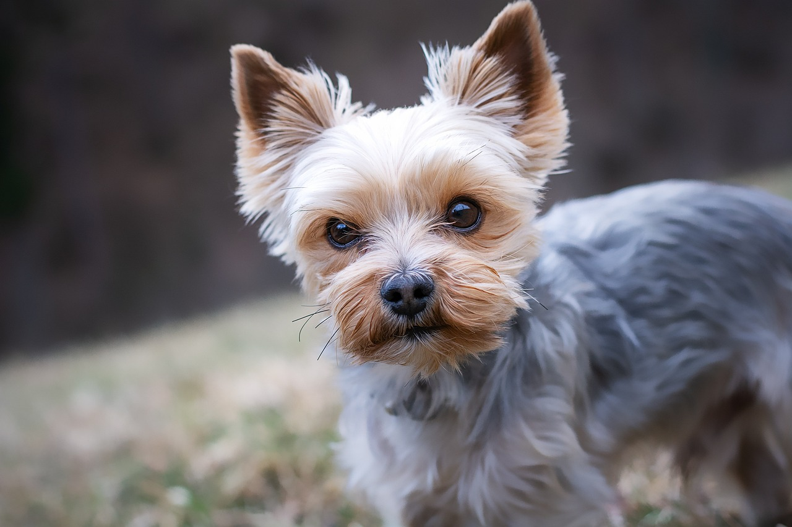
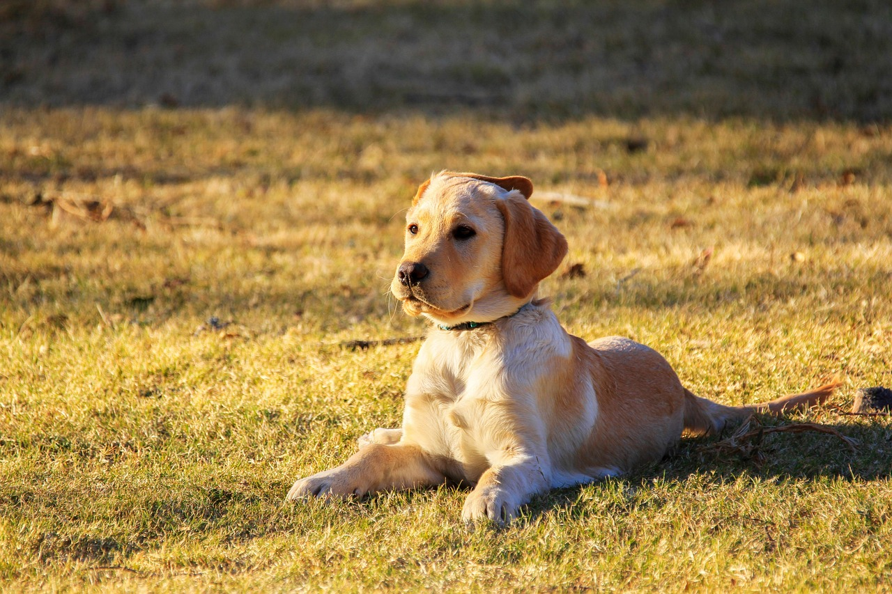
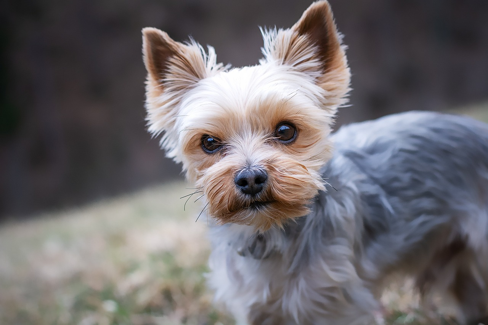
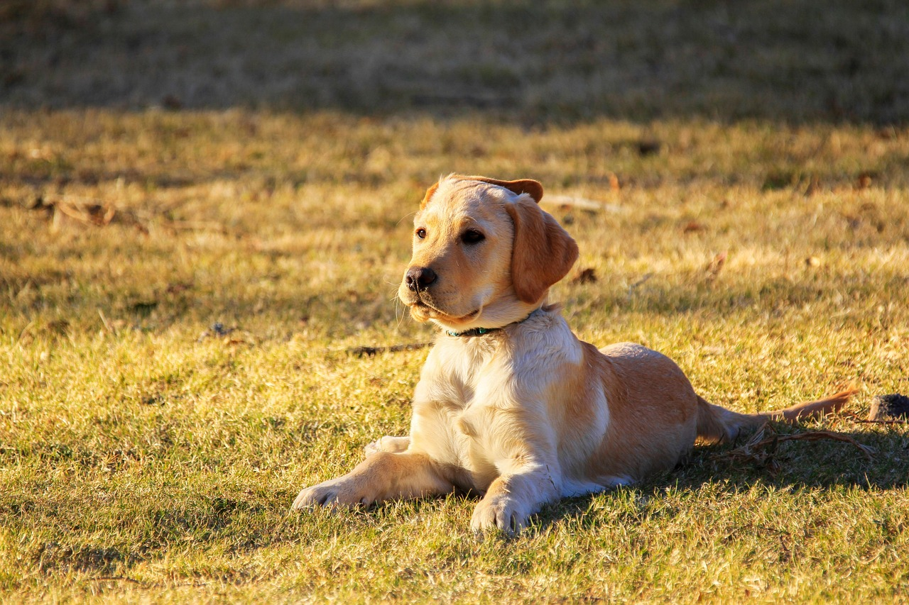

All pictures are completely free to use. I got them off of Pixabay
Foxes
Foxes are small-to-medium-sized omnivorous mammals belonging to several genera of the family Canidae. They have a flattened skull; upright, triangular ears; a pointed, slightly upturned snout; and a long, bushy tail ("brush").
Twelve species belong to the monophyletic "true fox" group of genus Vulpes. Another 25 current or extinct species are sometimes called foxes – they are part of the paraphyletic group of the South American foxes or an outlying group, which consists of the bat-eared fox, gray fox, and island fox.
Foxes live on every continent except Antarctica. The most common and widespread species of fox is the red fox (Vulpes vulpes) with about 47 recognized subspecies. The global distribution of foxes, together with their widespread reputation for cunning, has contributed to their prominence in popular culture and folklore in many societies around the world. The hunting of foxes with packs of hounds, long an established pursuit in Europe, especially in the British Isles, was exported by European settlers to various parts of the New World.
Etymology
The word fox comes from Old English and derives from Proto-Germanic *fuhsaz. This in turn derives from Proto-Indo-European *puḱ- "thick-haired, tail." Male foxes are known as dogs, tods, or reynards; females as vixens; and young as cubs, pups, or kits, though the last term is not to be confused with the kit fox, a distinct species. "Vixen" is one of very few modern English words that retain the Middle English southern dialectal "v" pronunciation instead of "f"; i.e., northern English "fox" versus southern English "vox". A group of foxes may be referred to as a skulk, leash, or earth.
Cats
The cat (Felis catus), also referred to as the domestic cat or house cat, is a small domesticated carnivorous mammal. It is the only domesticated species of the family Felidae. Advances in archaeology and genetics have shown that the domestication of the cat occurred in the Near East around 7500 BC. It is commonly kept as a pet and working cat, but it also ranges freely as a feral cat, avoiding human contact. It is valued by humans for companionship and its ability to kill vermin. Its retractable claws are adapted to killing small prey species such as mice and rats. It has a strong, flexible body, quick reflexes, and sharp teeth, and its night vision and sense of smell are well developed. It is a social species, but a solitary hunter and a crepuscular predator.
Cat communication includes meowing, purring, trilling, hissing, growling, grunting, and body language. It can hear sounds too faint or too high in frequency for human ears, such as those made by small mammals. It secretes and perceives pheromones. Cat intelligence is evident in its ability to adapt, learn through observation, and solve problems.
Female domestic cats can have kittens from spring to late autumn in temperate zones and throughout the year in equatorial regions, with litter sizes often ranging from two to five kittens. Domestic cats are bred and shown at cat fancy events as registered pedigreed cats. Population control includes spaying and neutering, but pet abandonment has exploded the global feral cat population, which has driven the extinction of bird, mammal, and reptile species.
Domestic cats occur across the globe, though their popularity as pets varies by region. Out of the estimated 600 million cats worldwide, 400 million reside in Asia, including 58 million pet cats in China. The United States leads in cat ownership with 73.8 million cats. In the United Kingdom, approximately 10.9 million domestic cats are kept as pets.
Etymology and naming
The origin of the English word cat, Old English catt, is thought to be the Late Latin word cattus, which was first used at the beginning of the 6th century. The Late Latin word may be derived from an unidentified African language. The Nubian word kaddîska (wildcat) and Nobiin kadīs are possible sources or cognates.
The forms might also have derived from an ancient Germanic word that was absorbed into Latin and then into Greek, Syriac, and Arabic The word may be derived from Germanic and Northern European languages, and ultimately be borrowed from Uralic, cf. Northern Sámi gáđfi, female stoat, and Hungarian hölgy, lady, female stoat; from Proto-Uralic *käďwä, female (of a furred animal).
The English puss, extended as pussy and pussycat, is attested from the 16th century and may have been introduced from Dutch poes or from Low German puuskatte, related to Swedish kattepus, or Norwegian pus, pusekatt. Similar forms exist in Lithuanian puižė and Irish puisín or puiscín. The etymology is unknown, but it may be an onomatopoeia from using a sound to attract a cat.
A male cat is called a tom, tommy or tomcat (or a gib, if neutered). A female is called a queen (or sometimes a molly, if spayed). Some sources write that queen refers solely to unspayed cats that are in an estrous cycle. A juvenile cat is referred to as a kitten, a term interchangeable with the now-obsolete word catling in Early Modern English. A group of cats can be referred to as a clowder, a glaring, or a colony.
Dogs
The dog (Canis familiaris or Canis lupus familiaris) is a domesticated descendant of the gray wolf. Also called the domestic dog, it was selectively bred from a population of wolves during the Late Pleistocene by hunter-gatherers. Dogs were the first species to be domesticated over 14,000 years ago, before the development of agriculture. Due to their long association with humans, dogs have gained the ability to thrive on a starch-rich diet that would be inadequate for other canids.
Dogs have been bred for desired behaviors, sensory capabilities, and physical attributes. Dog breeds vary widely in shape, size, and color. They have the same number of bones (with the exception of the tail), powerful jaws that house around 42 teeth, and well-developed senses of smell, hearing, and sight. Compared to humans, dogs possess a superior sense of smell and hearing, but inferior visual acuity. Dogs perform many roles for humans, such as hunting, herding, pulling loads, protection, companionship, therapy, aiding disabled people, and assisting police and the military.
Communication in dogs includes eye gaze, facial expression, vocalization, body posture (including movements of bodies and limbs), and gustatory communication (scents, pheromones, and taste). They mark their territories by urinating on them, which is more likely when entering a new environment. Over the millennia, dogs have uniquely adapted to human behavior; this adaptation includes being able to understand and communicate with humans. As such, the human–canine bond has been a topic of frequent study, and dogs' influence on human society has given them the sobriquet of "man's best friend".
The global dog population is estimated at 700 million to 1 billion, distributed around the world. The dog is the most popular pet in the United States, present in 34–40% of households. Developed countries make up approximately 20% of the global dog population, while around 75% of dogs are estimated to be from developing countries, mainly in the form of feral and community dogs.


 


